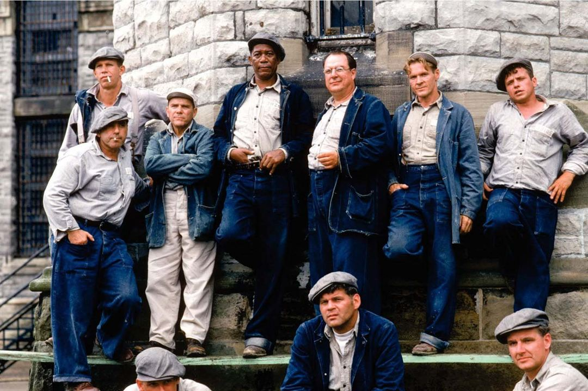
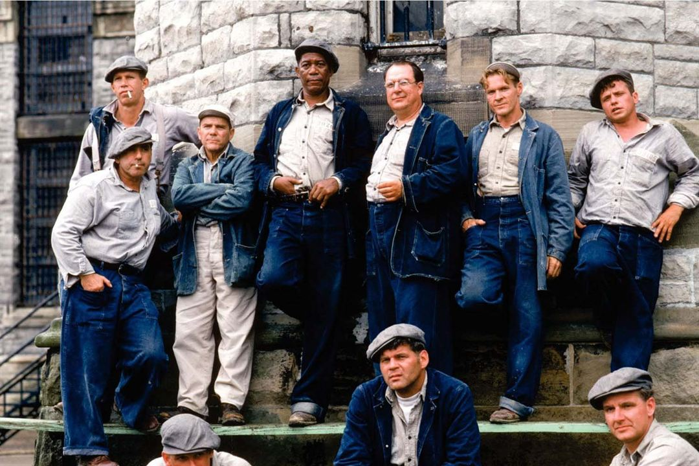

ESARETİN BEDELİ
FİLM GALERİSİ
 

HAKKINDA
Esaretin Bedeli, Andy ve Red isimli iki mahkumun parmaklıklar ardında kurdukları dünyanın hikayesini anlatıyor. Andy Dufresne, genç ve başarılı bir bankerdir. Karısını ve karısının sevgilisini öldürmek suçundan yargılanır ve ömür boyu hapis cezası alır. Shawsank Hapishanesi'nde dayak, işkence, tecavüz, her türlü durum yaşanmaktadır fakat Andy gene de hayata bağlı ve iyimserdir. Bu tutumu etrafındakileri de etkiler. Andy umutlu bakış açısıyla çevresindeki tüm mahkumları, parmaklıklar arkasında bile özgür bir yaşam olabileceğine inandırır. Andy'nin bu çabalarına ortak olacak bir arkadaşı da olacaktır: Red.Bir Stephen King uyarlaması olan filmde Morgan Freeman ve Tim Robbins başrolde. Film, 1995'te, aralarında en iyi film adaylığı da olmak üzere tam 7 dalda Oscar'a aday gösterildi.
Film İstatistikleri
İzlenme Oranı
IMDb Puanı
Eleştirmen İncelemesi
Kullanıcı Yorumu
Beğenme
Oyuncular
Tim Robbins
Andy Dufresne
Morgan Freeman
Ellis Boyd 'Red' Redding
Bob Gunton
Warden Norton

William Sadler
Heywood

Clancy Brown
Captain Hadley
Gil Bellows
Tommy

Mark Rolston
Bogs Diamond